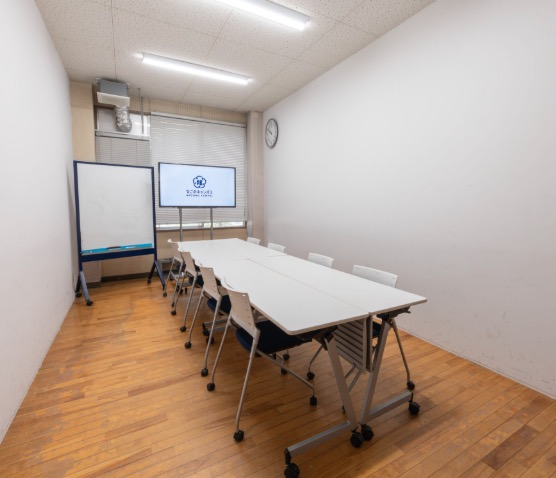
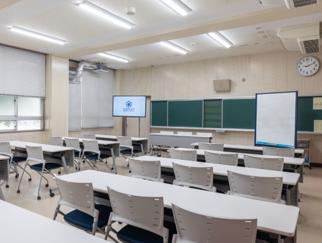

毎回テーマ制
その日のうちに「ひとつ作って」持ち帰れるよう、毎回ひとつのテーマに絞って進めます。
コンセプト
なごNotionは、Notionをそれとなく「使ってる」という状態から、自分なりに「使えてる」と実感できる状態へステップアップするための具体的なサポートをする50分の対面型のワークショップです。しかもそれを楽しく和やかに。
名前やできることを知っている
メモやタスクで触り始めている
目的に合わせて作れる
チームや仕組みに展開できる
なごNotionが担うのは「使ってる」と「使えてる」のあいだにある溝を埋める、橋渡し役をすることです。
和やか、なごNotion〜♪
特徴
その日のうちに「ひとつ作って」持ち帰れるよう、毎回ひとつのテーマに絞って進めます。
手を動かしながら出てきた疑問を、その場で相談できます。チーム参加も歓迎です。
気軽に参加できるよう、無料で実施します。
明日から活かせる何かしらの”なごり”を！
おすすめ
ページ作成やデータベースの先で止まっている状態から、一歩進めます。
AIを単体で試すだけでなく、日々の情報整理に組み込む感覚をつかみます。
ツール選びよりも、まず自分の仕事に残る形を作ることを重視します。
個人利用から、支援・設計・チーム導入へ広げる視点を得られます。
せっかく課金するなら有効活用しよう！


主催者

ジョウホウソース株式会社
愛知県名古屋市を拠点に活動。
企業向けのPMO（プロジェクトマネジメント）支援やNotion導入・トレーニングを専門に活動。
実家が醤油やであることから伝統・文化を大事にしている企業の発展にも力を入れています。
参加情報
タダより高いものはない〜🎶
よくある質問
参加できます。Notionを触ったことがある方を主な対象にしつつ、基本操作で迷った場合もその場で確認できます。
オフライン主体ですが、オンライン併用を予定しています。各回の参加方法はNotionページで案内します。
歓迎です。チームで同じテーマに取り組むと、ワーク後に現場へ持ち帰りやすくなります。
大丈夫です。回ごとのテーマに応じて、必要な範囲だけ扱います。
無料です。今後変更がある場合は、申込ページと案内ページで事前に告知します。
Notionにログインできる端末をご用意ください。PCでの参加をおすすめします。